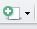

Reporting
Informatique Décisionnelle - LP MDS Santé
Nous allons reprendre le travail fait dans le TP 1 pour créer un tableau de bord sur la base de données publiques des médicaments. Celui-ci pourra donc être mis à jour mensuellement.
Nous verrons donc comment on peut produire un document (HTML, PDF voire Word) incluant à la fois le texte et les commandes R pour produire les éléments pour appuyer les commentaires (importation de données, tableaux, graphiques, …). Ce type de document peut être produit sous R avec rmarkdown
ce document a été écrit en
R markdown. Vous pouvez voir le fichier source ici. Pour mieux comprendre le langage, il est préférable de regarder le fichier source et ce document qui est donc la traduction du source en HTML.
Librairies
R fonctionne sur le principe d’un moteur de base, avec des fonctionnalités limitées. Celles-ci peuvent être augmentées grâce à l’ajout de librairies (appelées aussi packages). Il en existe de nombreuses, disponibles sur le site du CRAN (Comprehensive R Archive Network).
Chemin(s) de recherche des librairies
La commande .libPaths() permet de lister les différents répertoires dans lesquels R va pouvoir chercher les librairies. Si nous voulons en installer de nouvelles, et pouvoir les réutiliser plus tard, il faut donc spécifier un répertoire dans lequel nous avons les droits d’écriture.
Premièrement, il vous faut créer un répertoire dans votre "Z:/" qui contiendra les librairies R, par exemple nommé "Rlib", directement à la racine de votre "Z:/". Une fois celui-ci créé, vous pouvez indiquez à R qu’il doit aussi prendre en compte ce répertoire pour la recherche de librairies. Pour cela, vous devez exécuter la commande .libPaths("z:/Rlib"). Afin de vérfier que le répertoire a bien été ajouté, vous pouvez de nouveau lister les dossiers connus de R avec .libPaths(). Normalement, votre répertoire (ici "Z:/Rlib") doit être affiché en premier.
Voici donc les commandes à exécutées ici.
.libPaths()
.libPaths("z:/Rlib")
.libPaths()Attention. Cet ajout du répertoire "Z:/Rlib" aux chemins connus de R, via la commande .libPaths(), devra être effectué à chaque nouvelle session (i.e. à chaque fois que vous relancez RStudio donc).
Installation d’une librairie
Une fois le répertoire ajouté, nous pouvons installer les librairies directement dans R avec la commande install.packages(), en y listant les librairies voulues. Nous allons utilsier ici la librairie rmarkdown. Vous devez donc executer la commande suivante.
install.packages("rmarkdown")Quand vous l’exécuterez, vous verrez qu’il doit aussi installer d’autres librairies, appelées ici dépendances. Tout ceci est géré automatiquement par R sans que nous ayons à connaître la liste de ces dépendances.
Attention. L’installation d’une librairie n’est à faire qu’une seule fois.
Chargement d’une librairie
Une fois les librairies installées, il sera donc possible de les utiliser. Mais pour ceci, il faut tout d’abord les charger, à chaque session grâce à la fonction library(). Pour charger une librairie, il faudra donc exécuter un code de type :
library(rmarkdown)Attention. Le chargement d’une librairie via library() devra être effectuée à chaque nouvelle session, pour les librairies dont vous avez besoin.
Fichiers .RData
Plutôt que de devoir importer plusieurs fois des données, il est possible d’utiliser le format de données .RData, qui permet de sauvegarder tout ou partie de l’environnement de travail. Pour cela, nous allons utiliser les fonctions save() et save.image() pour sauvegarder, et la fonction load() pour charger les variables sauvegardées.
Sauvegarde de variable(s)
En premier lieu, il est possible de sauvegarder uniquement une variable créée dans un fichier .RData. Ci-dessous, nous créons l’objet a, qui est une chaîne simple, puis nous la sauvegardons dans le fichier a.RData. Enfin, nous la supprimons (et l’affichons pour bien voir qu’elle n’existe plus).
a = "test de RData"
print(a)## [1] "test de RData"save(a, file = "a.RData")
rm(a)
print(a)## Error in print(a): objet 'a' introuvableL’intérêt est donc que la variable a est dans le fichier .RData, qu’il est possible de charger dans R comme suit.
load("a.RData")
print(a)## [1] "test de RData"Pour sauvegarder plusieurs variables, il faut juste les lister dans la fonction save().
b = "deuxième test de RData"
c = 123456789
save(b, c, file = "bc.RData")
rm(b, c)
print(b, c)## Error in print(b, c): objet 'b' introuvableEt on les charge de la même façon.
load("bc.RData")
print(b)## [1] "deuxième test de RData"print(c)## [1] 123456789Sauvegarde de l’environnement
Quand on lance la fonction ls(), on liste l’ensemble des objets créés dans l’environnement de travail. La fonction save.image() va tous les sauvegarder dans un même fichier .RData.
ls()## [1] "a" "b" "b1" "c" "d"
## [6] "decathlon" "disj" "f" "femmes" "iris.mds"
## [11] "iris.pca" "lambdabar" "p" "p2" "p4"
## [16] "pc" "pl" "quanti" "res" "spam"
## [21] "swiss.mds" "the" "valeurs" "villes" "x"
## [26] "x1" "x.acm" "x.afc" "z1" "z1.comp"save.image("env.RData")Ensuite, nous allons nettoyer l’environnement de travail, en supprimant tous les objets (1ère ligne ci-dessous). Ainsi, en listant les variables avec ls(), on s’aperçoit qu’il n’y a plus rien.
rm(list = ls()) # Pour tout supprimer de l'environnement
ls()## character(0)Enfin, toujours avec la fonction load(), on charge les variables présentes dans le fichier, qu’on retrouve bien en faisant un ls().
load("env.RData")
ls()## [1] "a" "b" "b1" "c" "d"
## [6] "decathlon" "disj" "f" "femmes" "iris.mds"
## [11] "iris.pca" "lambdabar" "p" "p2" "p4"
## [16] "pc" "pl" "quanti" "res" "spam"
## [21] "swiss.mds" "the" "valeurs" "villes" "x"
## [26] "x1" "x.acm" "x.afc" "z1" "z1.comp"Données utilisées
Nous allons donc utiliser pour la suite les données d’un data-mart contenues dans le fichier ca.RData. Pour ce faire, nous allons utiliser la commande load(). Nous vérifions ensuite qu’on a bien toutes les données voulues (en ayant supprimé en premier les objets existants).
rm(list = ls())
load("donnees/ca/ca.RData")
ls()## [1] "ca" "ca_evol" "ca_tout" "groupe" "mois"
## [6] "provenance"Langage markdown
L’idée d’un document de type R markdown est donc d’inclure les commentaires et les commandes permettant d’obtenir les différents résultats. La syntaxe pour l’écriture du document est le langage markdown. Il a l’avantage d’être très simple à utiliser et à lire. Voici quelques éléments de base. Il a été fait pour ensuite être traduit en HTML.
Titres
Il y a deux façons d’écrire des titres. La première avec des "#" en début de ligne, pour produire des titres de niveau 1 (<h1>) à 6 (<h6>).
# Titre de niveau 1
## Titre de niveau 2
...
###### Titre de niveau 6L’autre ne concerne que les titres de niveau 1 et 2.
Titre de niveau 1
=================
Titre de niveau 2
-----------------Paragraphes et divers
Les paragraphes s’écrivent simplement, sans notation particulière. Un passage à la ligne seule ne sera pas suffisant pour un changement de paragraphe, il est nécessaire de laisser (au moins) une ligne entre deux paragraphes.
Il est possible de mettre en avant des mots de deux façons :
**mot(s) important(s)**: un ou plusieurs mots encadrés par des**(ou des__) seront transformés en balisestrong(souvent mis en gras)*mot(s) moins importants*: idem que précédement mais avec*(ou_), transformés en baliseem(souvent mis en italique)
Pour faire un lien vers une page ou une URL, il est possible d’utiliser plusieurs syntaxes :
<url>: lien mis directement (par exemple http://fxjollois.github.io)[texte](lien "texte optionnel"): lien mis sur un texte (par exemple ma page web)[texte][label]: lien mis sur un texte aussi, avec un pied de page ajouté plus tard avec[label]: url "texte optionnel"(par exemple page perso)
Pour intégrer des images dans un document markdown, on utilise un formalisme similaire aux liens, avec un !avant :
: le texte sert à contextualiser l’image
![texte][label]: on définit le label par la suite avec[label]: lien "texte optionnel"
re bla
On peut aussi ajouter des lignes horizontales, pour découper le texte. Pour cela, il est nécessaire d’écrire une ligne avec
- soit au moins 3 caractères identiques (
"*"ou"-") - soit 3 caractères identiques (toujours
"*"ou"-") séparés d’un espace.
Voici les quatre façons de faire donc, qui produiront le même résultat :
***
---
* * *
- - -Et un exemple de séparation
On peut aussi créer des blocs de citations (équivalent à la balise blockquote), en commençant les lignes par ">".
Voici un exemple de bloc de citation, permettant de mettre en avant des éléments importants.
Listes
Il est possible de créer deux types de listes (non-ordonnées et ordonnées). Il faut noter cependant que les listes doivent être séparées des paragraphes par (au moins) une ligne au-dessus et en-dessous. De plus, pour les sous-listes, il faut mettre une tabulation (ou deux si sous-sous-liste, et ainsi de suite).
Il est bien évidemment totalement possible de mélanger les deux types de listes si besoin.
Non-ordonnées
Ce sont les plus simples à écrire. Les items commencent tous par le même caractère. Le caractère utilisé ici ("-") peut être remplacé par "*" ou "+".
- 1er élément
- 2ème élément
- sous-élement A
- sous-élément B
- …
- etc…
Ordonnées
Pour avoir une liste ordonnée, il est nécessaire de commencer la ligne par un chiffre suivi de ".". Par contre, le chiffre indiqué n’est pas pris en compte. Ce qui fait que la sous-liste ici produira bien 1, 2 et 3.
- élément 1
- élément 2
- sous-élément 1
- sous-élément 2
- sous-élément 3
Tableaux
On peut définir un tableau directement, en précisant d’abord le nom des colonnes (séparés par "|"). Il faut ensuite faire une séparation via une ligne avec "---" (au moins) pour chaque colonne et toujours des séparations ("|") entre les colonnes. Ensuite, les valeurs de chaque ligne doivent être toujours séparées par des "|".
Le style de chaque colonne (aligné à gauche - par défaut, aligné à droite ou centré) peut être indiqué dans la ligne de séparation entre les noms de colonnes et les valeurs, avec
---(ou:--) : aligné à gauche--:: aligné à droite:-:: centré
Voici un exemple de tableau, dans lequel nous avons défini le style de chaque colonne
| col 1 | col 2 | … | col n |
|---|---|---|---|
| Ligne | complète | sur 4 | colonnes |
| Ligne | incomplète | à la fin | |
| ligne | incomplète | au début |
Codes
L’intérêt de ce langage est aussi de pouvoir intégrer des éléments de code (soit des blocs complets, soit des éléments en ligne), permettant de présenter le travail fait.
Bloc de code
Pour créer un bloc de code, il faut soit le précéder et le suivre d’une ligne avec ```, soit le faire commencer par une indentation (une tabulation ou 4 espaces).
# premier code quelconque
d = read.table("d")
summary(d)# deuxième code quelconque
dd = subset(d, var1 == valeur)
summary(dd)Code en ligne
Il est aussi possible d’écrire du code (par exemple un nom de fonction ou autre) dans une phrase, en encadrant ce code entre deux `, ce qui donne par exemple fonction().
Document R markdown
Un document R markdown (généralement enregistré avec l’extension .rmd ou .Rmd) permet d’une part d’utiliser la syntaxe markdown pour écrire du texte, mais aussi d’inclure des commandes R directement dans le document. Ainsi, un seul document contient le code et le commentaire, ce qui est un atout non négligeable pour des rapports ou présentations devant être mises à jour ou refaits régulièrement.
Il est possible d’inclure les commandes R soit dans un bloc de code, appelé chunck dans R Studio, ou en ligne, appelé inline chunck.
Pour créer un document R markdown dans R Studio, vous pouvez cliquer sur l’icône , puis sur R markdown…. Vous devez voir apparaître une interface vous demandant de choisir entre un document, une présentation, une application Shiny ou de choisir un template prédéfini. Nous allons rester sur le document pour le moment. De plus, vous pouvez indiquer le titre et l’auteur, ainsi que choisir le format de sortie (HTML, PDF ou Word). Nous allons garder HTML pour le moment.
En-tête
Lors de la création d’un nouveau document R markdown, vous devez voir apparaître en début de document une partie d’en-tête, comme ci-dessous, au format YAML.
---
title: "Untitled"
author: "FX Jollois"
date: "17/10/2016"
output: html_document
---Dans cette en-tête, nous pouvons donc définir le titre, éventuellement un sous-titre (avec subtitle:), le ou les auteurs, la date et des options de sortie. Pour le moment, nous allons garder la sortie au format HTML. Pour passer au format PDF, il faut écrire pdf_document dans output (ainsi qu’avoir \(\LaTeX\) installé sur sa machine - ce qui n’est pas le cas à l’IUT). Pour créer un document de type Word, il faut choisir word_document pour output.
Il y a d’autres possibilités de sortie, ainsi que la possibilité d’ajouter d’autres paramètres de sortie, que nous ne verrons pas ici.
Chunck
Un chunck sera donc un bloc de commande R (ou autre langage possible) qui sera exécuté par R Studio. Pour cela, il faut indiquer sur la première ligne le langage utilisé. Pour R, voici donc un exemple simple
```{r}
# code R
summary(iris)
```Dans le document sera donc intégré à la fois le code, ainsi que le résultat de son exécution. L’exemple donnera donc
# code R
summary(iris)## Sepal.Length Sepal.Width Petal.Length Petal.Width
## Min. :4.300 Min. :2.000 Min. :1.000 Min. :0.100
## 1st Qu.:5.100 1st Qu.:2.800 1st Qu.:1.600 1st Qu.:0.300
## Median :5.800 Median :3.000 Median :4.350 Median :1.300
## Mean :5.843 Mean :3.057 Mean :3.758 Mean :1.199
## 3rd Qu.:6.400 3rd Qu.:3.300 3rd Qu.:5.100 3rd Qu.:1.800
## Max. :7.900 Max. :4.400 Max. :6.900 Max. :2.500
## Species
## setosa :50
## versicolor:50
## virginica :50
##
##
## Il est possible de nommer le chunck en lui donnant un label (sans espace, sans accent) après r dans les {}. Ceci est intéressant surtout dans l’étape de développement, car si une erreur arrive lors de l’exécution, il sera plus facile de retrouver dans quel chunck est l’erreur (indiqué lors de l’affichage de l’erreur).
De plus, il est possible de mettre des options dans le chunck, toujours dans les {}, après une ",". Voici quelques options classiques et utiles (avec leur valeur par défaut indiquée, si elle existe) :
include = TRUE: siFALSE, le code est exécuté mais il n’est pas inclus dans le document (ni le code, ni son résultat)echo = TRUE: siFALSE, le code n’est pas affiché mais bien exécutéeval = TRUE: siFALSE, le code est affiché mais n’est pas exécutéresults = 'markup': permet de définir comment le résultat est affiché (intéressant pour les tableaux, cf plus loin)fig.cap: titre du graphique produit
Il est possible de mettre plusieurs options, toutes séparées par des ",".
Quelques exemples
Dans la suite, voici quelques exemples de chuncks avec options. Regardez le source pour mieux comprendre le fonctionnement.
Tout d’abord, on importe les données heart.txt, mais ce genre de code n’est souvent pas à inclure, dans le sens où l’on ne veut ni l’afficher, ni voir de résultat.
Ensuite, la librairie knitr contient une fonction kable() permettant d’afficher un data.frame au format markdown. Cela permet d’avoir un résultat plus lisible qu’une sortie de console R classique.
knitr::kable(head(heart))| age | sexe | type_douleur | pression | cholester | sucre | electro | taux_max | angine | depression | pic | vaisseau | coeur |
|---|---|---|---|---|---|---|---|---|---|---|---|---|
| 70 | masculin | D | 130 | 322 | A | C | 109 | non | 2.4 | 2 | D | presence |
| 67 | feminin | C | 115 | 564 | A | C | 160 | non | 1.6 | 2 | A | absence |
| 57 | masculin | B | 124 | 261 | A | A | 141 | non | 0.3 | 1 | A | presence |
| 64 | masculin | D | 128 | 263 | A | A | 105 | oui | 0.2 | 2 | B | absence |
| 74 | feminin | B | 120 | 269 | A | C | 121 | oui | 0.2 | 1 | B | absence |
| 65 | masculin | D | 120 | 177 | A | A | 140 | non | 0.4 | 1 | A | absence |
Enfin, on peut vouloir faire un graphique, ce qui pourrait donner ce qui suit. Pour ce genre de présentation, nous pouvons décider de ne pas afficher le code permettant de les obtenir.
Répartition du sexe des individus selon le problème cardiaque
Inline chunck
On peut faire des chuncks en ligne en encadrant le code avec des ` et en commencant le code par un r. Par exemple, on peut dire que dans le jeu de données heart sont présentés 270 individus et 13 variables.
Paramètres globaux des chuncks
Il est possible de déterminer des paramètres globaux pour tous les blocs chuncks du document (sauf paramètres locaux précisés). Ceci doit se faire comme suit, avec la fonction set() de l’objet opts_chunck de la librairie knitr. Il est par exemple possible de définir echo=FALSE pour n’avoir aucun code apparaissant dans le document.
knitr::opts_chunk$set(...)Package flexdashboard
Nous allons maintenant voir comment utiliser la librairie flexdashboard (basée entre autres sur rmarkdown) pour générer des tableaux de bords automatisés. Nous allons voir ici quelques éléments de base, vous trouverez beaucoup d’autres informations sur le site indiqué.
Installation
Vous devez d’abord installer le package via la commande install.packages(). Pour rappel, voici les étapes à suivre (non exécutées dans ce document).
.libPaths("z:/Rlib") # ou un autre chemin en fonction de vos choix précédents
install.packages("flexdashboard")
library(flexdashboard)Création d’un premier document
Une fois que vous avez chargé la librairie, il est possible de créer un document de base de type flexdashboard en suivant les étapes suivantes :
- Cliquer la création d’un nouveau document ()
- Choisir R markdown…
- Choisir ensuite From Template et sélection Flex Dashboard
Vous devez obtenir un document commençant par
---
title: "Untitled"
output:
flexdashboard::flex_dashboard:
orientation: columns
vertical_layout: fill
---
...En cliquant sur Knit, vous devez obtenir le document suivant. Vous remarquerez qu’il y a de la place pour mettre des graphiques et/ou des tableaux. Nous allons agrémenter ce tableau de bord à l’aide de graphiques et de pastilles d’informations.
Modification du titre
En premier lieu, il faut changer le titre du reporting, en mettant par exemple "Evolution CA".
Importation de données
Nous allons commencer par importer les données dans ce tableau de bord, grâce au code ci-dessus. Ceci permettra donc de ne pas avoir d’étapes de chargement des fichiers texte et de jointures, pouvant prendre du temps et inutiles puisque les données n’évoluent pas en temps réel.
Vous devez donc introduire le code suivant dans le premier chunck (en dessous du chargement de la librairie flexdashboard), nommé setup et ayant l’option include=FALSE. Ceci permettra donc d’avoir les données à disposition, mais que le code ne s’affiche pas dans le document final.
load("donnees/ca/ca.RData")Premier graphique
Pour le premier graphique (Chart A), nous allons représenter l’évolution du chiffre d’affaires sur la période 2003-2004, mois par mois. Dans la partie ### Chart A, nous allons d’abord modifier le titre en "Evolution mois par mois", par exemple (au lieu de "Chart A" donc). Ensuite, il faut mettre le code suivant dans le chunck correspondant.
d = setNames(aggregate(ca / 1000000 ~ mois_no, ca_tout, sum), c("mois", "ca"))
par(mar = c(4, 4, 0, 0) + .1)
plot(ca ~ mois, d, type = "b",
xlab = "Mois", ylab = "Chiffre d'affaires (M€)")
abline(h = mean(d$ca), lty = 3, col = "gray50")Une fois que vous compilez votre document, vous devez obtenir la page suivante.
Deuxième graphique
Dans la fenêtre en haut à gauche (Chart B), nous allons placer un tableau, indiquant le chiffre d’affaires pour 2003 et pour 2004, mois par mois. Pour cela, nous allons d’abord renommer le titre en "Comparaison mois par mois (en k€)". Puis nous allons mettre le code suivant dans le chunk correspondant.
d = aggregate(cbind(ca2003, ca2004, evolution) / 1000 ~ mois + mois_numero,
ca_evol, sum)
d = subset(d, select = -mois_numero)
names(d) = c("Mois", "2003", "2004", "Evolution")
knitr::kable(d, digits = 0)Une fois exécuté, vous obtenez le document suivant. Il est possible de naviguer dans le tableau avec la souris pour voir les mois caché.
Troisième graphique
Nous allons utiliser ici ce qu’on pourrait appeler une pastille, avec la fonction valueBox() du package flewdashboard. Celle-ci prend en paramètre une valeur à afficher (numérique ou textuelle), une icône, et éventuellement une couleur. Elle affichera aussi le titre (de niveau 3, ###) mis avant le chunk la contenant.
Il faut tout d’abord remplacer le titre par "Augmentation entre 2003 et 2004". Ensuite, on va placer le code suivant dans le chunk.
d = aggregate(ca ~ annee, ca_tout, sum)
v = paste(round((d$ca[2] / d$ca[1] - 1) * 100, 2), "%")
valueBox(v, icon = "fa-arrow-circle-up", color = "green")Vous devriez avoir cette page une fois le document Rmd compilé.
Plusieurs onglets
Il est possible de créer un système d’onglet pour avoir plusieurs pages dans le reporting. Pour cela, vous devez d’abord créer un titre de niveau 1 (#) pour la première page (en la nommant par exemple "Synthèse"). Ce titre doit être placé avant la ligne Column....
Vous devriez avoir cette page comme résultat.
Créer un deuxième onglet, nommé "Détail", dans lequel nous allons mettre deux tables : une pour les départements et une pour les provenances. Voici les codes des deux chunks pour créer ces tableaux.
evol.dpt = aggregate(cbind(ca2003, ca2004, evolution) / 1000 ~ departement,
ca_evol, sum)
names(evol.dpt) = c("Département", "2003", "2004", "Evolution")
knitr::kable(evol.dpt, digits = 0)evol.prov = aggregate(cbind(ca2003, ca2004, evolution) / 1000 ~ provenance,
ca_evol, sum)
names(evol.prov) = c("Provenance", "2003", "2004", "Evolution")
knitr::kable(evol.prov, digits = 0)Une fois compilé, vous devriez avoir le tableau de bord suivant.
Modification de l’orientation
Dans la première page, nous avions disposer les différents éléments par colonnes (un élément dans la première et deux dans la deuxième). Il est possible de modifier cela pour une page spécifique. Dans la deuxième, à la suite du titre et sur la même ligne, il est possible d’ajouter {data-orientation=rows}.
Ainsi, le tableau devient celui-ci.
Nous allons maintenant utiliser une jauge, avec la fonction gauge() du package flexdashboard. Celle-ci prend au minimum en paramètre une valeur, un minimum et un maximum.
Et pour avoir des graphiques prenant toute la page en bas, il faut réaliser deux étapes :
- Insérer un titre de niveau 2 avant les deux chunks créés
- Insérer un nouveau titre de niveau 2 puis les chunk contenant le code pour les graphiques
Nombre de département en hausse
gauge(sum(evol.dpt$Evolution > 0), 0, nrow(evol.dpt))Département avec la plus grosse évolution
valueBox(evol.dpt$Département[which.max(evol.dpt$Evolution)], icon = "fa-level-up")Nombre de provenance en hausse
gauge(sum(evol.prov$Evolution > 0), 0, nrow(evol.prov))Provenance avec la plus grosse évolution
valueBox(evol.prov$Provenance[which.max(evol.prov$Evolution)], icon = "fa-level-up")Au final, nous obtenons donc le tableau de bord suivant.
Publication
Pour information, pour publier un tableau de bord ainsi créé, il faut juste placer le document .Rmd, ainsi que les données si besoin, sur un serveur dédié ayant l’application shiny server dessus. C’est une opération simple, mais que souvent seul le service informatique pourra effectué.
Vous pouvez voir un exemple avec ce lien.
Exercice
Mettre dans un tableau de bord les différents tableaux obtenus dans le TP1